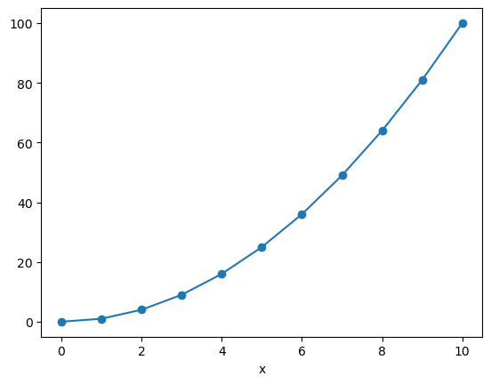
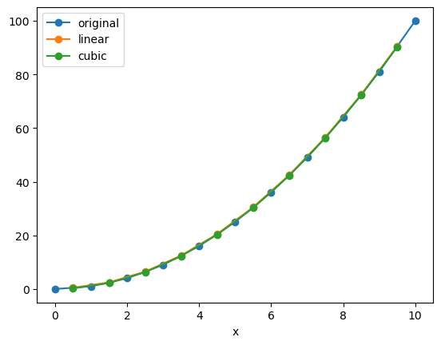
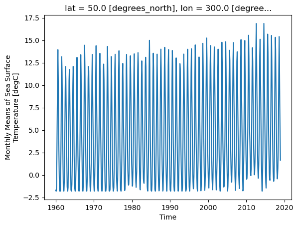
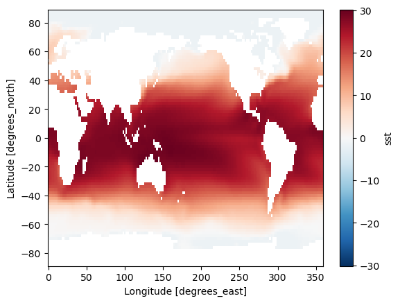
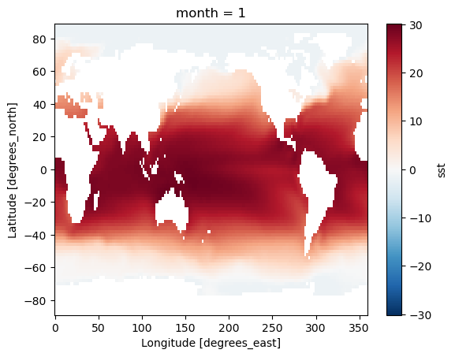
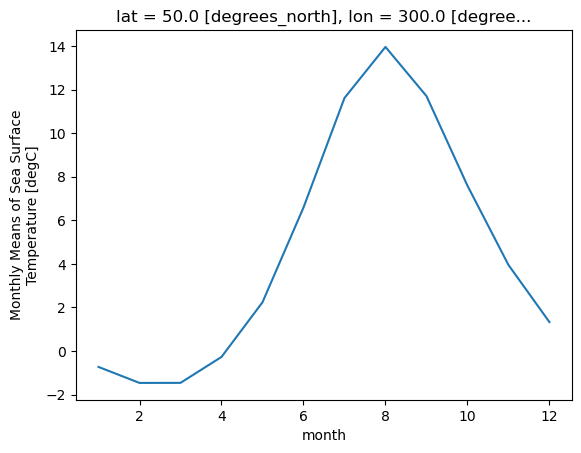
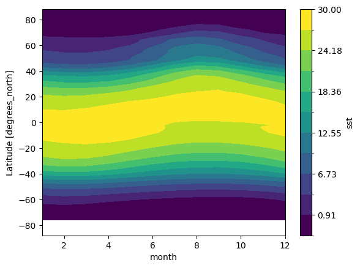
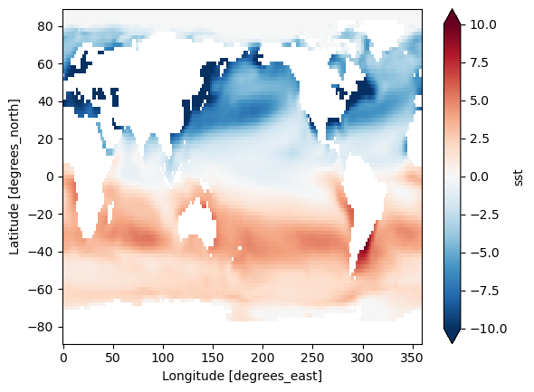
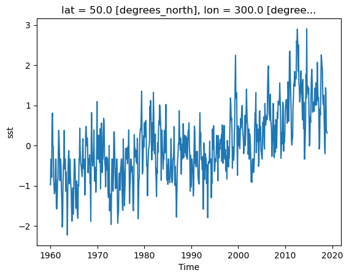
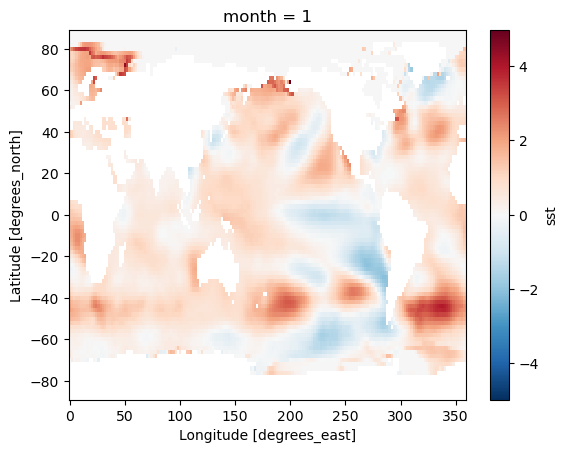

Xarray Advanced#
– Interpolation, Groupby, Resample, Rolling, and Coarsen
In this lesson, we cover some more advanced aspects of xarray.
import numpy as np
import xarray as xr
from matplotlib import pyplot as plt
%xmode Minimal
---------------------------------------------------------------------------
ModuleNotFoundError Traceback (most recent call last)
Cell In[1], line 2
1 import numpy as np
----> 2 import xarray as xr
3 from matplotlib import pyplot as plt
4 get_ipython().run_line_magic('xmode', 'Minimal')
ModuleNotFoundError: No module named 'xarray'
Interpolation#
In the previous lesson on Xarray, we learned how to select data based on its dimension coordinates and align data with dimension different coordinates. But what if we want to estimate the value of the data variables at different coordinates. This is where interpolation comes in.
# we write it out explicitly so we can see each point.
x_data = np.array([0, 1, 2, 3, 4, 5, 6, 7, 8, 9, 10])
f = xr.DataArray(x_data**2, dims=['x'], coords={'x': x_data})
f
<xarray.DataArray (x: 11)> Size: 88B array([ 0, 1, 4, 9, 16, 25, 36, 49, 64, 81, 100]) Coordinates: * x (x) int64 88B 0 1 2 3 4 5 6 7 8 9 10
f.plot(marker='o')
[<matplotlib.lines.Line2D at 0x7e79cf17f350>]

f.sel(x=4)
<xarray.DataArray ()> Size: 8B
array(16)
Coordinates:
x int64 8B 4We only have data on the integer points in x. But what if we wanted to estimate the value at, say, 4.5?
f.sel(x=4.5)
KeyError: 4.5
The above exception was the direct cause of the following exception:
KeyError: 4.5
The above exception was the direct cause of the following exception:
KeyError: "not all values found in index 'x'. Try setting the `method` keyword argument (example: method='nearest')."
Interpolation to the rescue!
f.sel(x=4), f.sel(x=5)
(<xarray.DataArray ()> Size: 8B
array(16)
Coordinates:
x int64 8B 4,
<xarray.DataArray ()> Size: 8B
array(25)
Coordinates:
x int64 8B 5)
f.interp(x=4.5)
<xarray.DataArray ()> Size: 8B
array(20.5)
Coordinates:
x float64 8B 4.5Interpolation uses scipy.interpolate under the hood. There are different modes of interpolation.
# default
f.interp(x=4.5, method='linear').values
array(20.5)
f.interp(x=4.5, method='nearest').values
array(16.)
f.interp(x=4.5, method='cubic').values
array(20.25)
We can interpolate to a whole new coordinate at once:
x_new = x_data + 0.5
f_interp_linear = f.interp(x=x_new, method='linear')
f_interp_cubic = f.interp(x=x_new, method='cubic')
f.plot(marker='o', label='original')
f_interp_linear.plot(marker='o', label='linear')
f_interp_cubic.plot(marker='o', label='cubic')
plt.legend()
<matplotlib.legend.Legend at 0x7e79c6826ba0>

Note that values outside of the original range are not supported:
f_interp_linear.values
array([ 0.5, 2.5, 6.5, 12.5, 20.5, 30.5, 42.5, 56.5, 72.5, 90.5, nan])
Note
You can apply interpolation to any dimension, and even to multiple dimensions at a time.
(Multidimensional interpolation only supports mode='nearest' and mode='linear'.)
But keep in mind that Xarray has no built-in understanding of geography.
If you use interp on lat / lon coordinates, it will just perform naive interpolation of the lat / lon values.
More sophisticated treatment of spherical geometry requires another package such as xesmf.
Groupby#
Xarray copies Pandas’ very useful groupby functionality, enabling the “split / apply / combine” workflow on xarray DataArrays and Datasets. In the first part of the lesson, we will learn to use groupby by analyzing sea-surface temperature data.
First we load a dataset. We will use the NOAA Extended Reconstructed Sea Surface Temperature (ERSST) v5 product, a widely used and trusted gridded compilation of of historical data going back to 1854.
Since the data is provided via an OPeNDAP server, we can load it directly without downloading anything:
url = 'http://www.esrl.noaa.gov/psd/thredds/dodsC/Datasets/noaa.ersst.v5/sst.mnmean.nc'
ds = xr.open_dataset(url, drop_variables=['time_bnds'])
ds = ds.sel(time=slice('1960', '2018')).load()
ds
<xarray.Dataset> Size: 45MB
Dimensions: (lat: 89, lon: 180, time: 708)
Coordinates:
* lat (lat) float32 356B 88.0 86.0 84.0 82.0 ... -82.0 -84.0 -86.0 -88.0
* lon (lon) float32 720B 0.0 2.0 4.0 6.0 8.0 ... 352.0 354.0 356.0 358.0
* time (time) datetime64[ns] 6kB 1960-01-01 1960-02-01 ... 2018-12-01
Data variables:
sst (time, lat, lon) float32 45MB -1.8 -1.8 -1.8 -1.8 ... nan nan nan
Attributes: (12/39)
climatology: Climatology is based on 1971-2000 SST, X...
description: In situ data: ICOADS2.5 before 2007 and ...
keywords_vocabulary: NASA Global Change Master Directory (GCM...
keywords: Earth Science > Oceans > Ocean Temperatu...
instrument: Conventional thermometers
source_comment: SSTs were observed by conventional therm...
... ...
comment: SSTs were observed by conventional therm...
summary: ERSST.v5 is developed based on v4 after ...
dataset_title: NOAA Extended Reconstructed SST V5
_NCProperties: version=2,netcdf=4.6.3,hdf5=1.10.5
data_modified: 2025-06-03
DODS_EXTRA.Unlimited_Dimension: timeLet’s do some basic visualizations of the data, just to make sure it looks reasonable.
ds.sst[0].plot(vmin=-2, vmax=30)
<matplotlib.collections.QuadMesh at 0x7e79c62932c0>
ds.sst.isel(time=0).plot(vmin=-2, vmax=30)
<matplotlib.collections.QuadMesh at 0x7e79bc7c0380>
Note that xarray correctly parsed the time index, resulting in a Pandas datetime index on the time dimension.
ds.time
<xarray.DataArray 'time' (time: 708)> Size: 6kB
array(['1960-01-01T00:00:00.000000000', '1960-02-01T00:00:00.000000000',
'1960-03-01T00:00:00.000000000', ..., '2018-10-01T00:00:00.000000000',
'2018-11-01T00:00:00.000000000', '2018-12-01T00:00:00.000000000'],
shape=(708,), dtype='datetime64[ns]')
Coordinates:
* time (time) datetime64[ns] 6kB 1960-01-01 1960-02-01 ... 2018-12-01
Attributes:
long_name: Time
delta_t: 0000-01-00 00:00:00
avg_period: 0000-01-00 00:00:00
prev_avg_period: 0000-00-07 00:00:00
standard_name: time
axis: T
actual_range: [19723. 82300.]
_ChunkSizes: 1ds.sst.sel(lon=300, lat=50).plot()
[<matplotlib.lines.Line2D at 0x7e79bc67a450>]

As we can see from the plot, the timeseries at any one point is totally dominated by the seasonal cycle. We would like to remove this seasonal cycle (called the “climatology”) in order to better see the long-term variaitions in temperature. We will accomplish this using groupby.
The syntax of Xarray’s groupby is almost identical to Pandas. We will first apply groupby to a single DataArray.
ds.sst.groupby?
Signature:
ds.sst.groupby(
group: 'GroupInput' = None,
*,
squeeze: 'Literal[False]' = False,
restore_coord_dims: 'bool' = False,
eagerly_compute_group: 'Literal[False] | None' = None,
**groupers: 'Grouper',
) -> 'DataArrayGroupBy'
Docstring:
Returns a DataArrayGroupBy object for performing grouped operations.
Parameters
----------
group : str or DataArray or IndexVariable or sequence of hashable or mapping of hashable to Grouper
Array whose unique values should be used to group this array. If a
Hashable, must be the name of a coordinate contained in this dataarray. If a dictionary,
must map an existing variable name to a :py:class:`Grouper` instance.
squeeze : False
This argument is deprecated.
restore_coord_dims : bool, default: False
If True, also restore the dimension order of multi-dimensional
coordinates.
eagerly_compute_group: bool, optional
This argument is deprecated.
**groupers : Mapping of str to Grouper or Resampler
Mapping of variable name to group by to :py:class:`Grouper` or :py:class:`Resampler` object.
One of ``group`` or ``groupers`` must be provided.
Only a single ``grouper`` is allowed at present.
Returns
-------
grouped : DataArrayGroupBy
A `DataArrayGroupBy` object patterned after `pandas.GroupBy` that can be
iterated over in the form of `(unique_value, grouped_array)` pairs.
Examples
--------
Calculate daily anomalies for daily data:
>>> da = xr.DataArray(
... np.linspace(0, 1826, num=1827),
... coords=[pd.date_range("2000-01-01", "2004-12-31", freq="D")],
... dims="time",
... )
>>> da
<xarray.DataArray (time: 1827)> Size: 15kB
array([0.000e+00, 1.000e+00, 2.000e+00, ..., 1.824e+03, 1.825e+03,
1.826e+03], shape=(1827,))
Coordinates:
* time (time) datetime64[ns] 15kB 2000-01-01 2000-01-02 ... 2004-12-31
>>> da.groupby("time.dayofyear") - da.groupby("time.dayofyear").mean("time")
<xarray.DataArray (time: 1827)> Size: 15kB
array([-730.8, -730.8, -730.8, ..., 730.2, 730.2, 730.5], shape=(1827,))
Coordinates:
* time (time) datetime64[ns] 15kB 2000-01-01 2000-01-02 ... 2004-12-31
dayofyear (time) int64 15kB 1 2 3 4 5 6 7 8 ... 360 361 362 363 364 365 366
Use a ``Grouper`` object to be more explicit
>>> da.coords["dayofyear"] = da.time.dt.dayofyear
>>> da.groupby(dayofyear=xr.groupers.UniqueGrouper()).mean()
<xarray.DataArray (dayofyear: 366)> Size: 3kB
array([ 730.8, 731.8, 732.8, ..., 1093.8, 1094.8, 1095.5])
Coordinates:
* dayofyear (dayofyear) int64 3kB 1 2 3 4 5 6 7 ... 361 362 363 364 365 366
>>> da = xr.DataArray(
... data=np.arange(12).reshape((4, 3)),
... dims=("x", "y"),
... coords={"x": [10, 20, 30, 40], "letters": ("x", list("abba"))},
... )
Grouping by a single variable is easy
>>> da.groupby("letters")
<DataArrayGroupBy, grouped over 1 grouper(s), 2 groups in total:
'letters': 2/2 groups present with labels 'a', 'b'>
Execute a reduction
>>> da.groupby("letters").sum()
<xarray.DataArray (letters: 2, y: 3)> Size: 48B
array([[ 9, 11, 13],
[ 9, 11, 13]])
Coordinates:
* letters (letters) object 16B 'a' 'b'
Dimensions without coordinates: y
Grouping by multiple variables
>>> da.groupby(["letters", "x"])
<DataArrayGroupBy, grouped over 2 grouper(s), 8 groups in total:
'letters': 2/2 groups present with labels 'a', 'b'
'x': 4/4 groups present with labels 10, 20, 30, 40>
Use Grouper objects to express more complicated GroupBy operations
>>> from xarray.groupers import BinGrouper, UniqueGrouper
>>>
>>> da.groupby(x=BinGrouper(bins=[5, 15, 25]), letters=UniqueGrouper()).sum()
<xarray.DataArray (x_bins: 2, letters: 2, y: 3)> Size: 96B
array([[[ 0., 1., 2.],
[nan, nan, nan]],
<BLANKLINE>
[[nan, nan, nan],
[ 3., 4., 5.]]])
Coordinates:
* x_bins (x_bins) interval[int64, right] 32B (5, 15] (15, 25]
* letters (letters) object 16B 'a' 'b'
Dimensions without coordinates: y
See Also
--------
:ref:`groupby`
Users guide explanation of how to group and bin data.
:doc:`xarray-tutorial:intermediate/01-high-level-computation-patterns`
Tutorial on :py:func:`~xarray.DataArray.Groupby` for windowed computation
:doc:`xarray-tutorial:fundamentals/03.2_groupby_with_xarray`
Tutorial on :py:func:`~xarray.DataArray.Groupby` demonstrating reductions, transformation and comparison with :py:func:`~xarray.DataArray.resample`
:external:py:meth:`pandas.DataFrame.groupby <pandas.DataFrame.groupby>`
:func:`DataArray.groupby_bins <DataArray.groupby_bins>`
:func:`Dataset.groupby <Dataset.groupby>`
:func:`core.groupby.DataArrayGroupBy <core.groupby.DataArrayGroupBy>`
:func:`DataArray.coarsen <DataArray.coarsen>`
:func:`Dataset.resample <Dataset.resample>`
:func:`DataArray.resample <DataArray.resample>`
File: /srv/conda/envs/notebook/lib/python3.12/site-packages/xarray/core/dataarray.py
Type: method
Split Step#
The most important argument is group: this defines the unique values we will us to “split” the data for grouped analysis. We can pass either a DataArray or a name of a variable in the dataset. Lets first use a DataArray. Just like with Pandas, we can use the time indexe to extract specific components of dates and times. Xarray uses a special syntax for this .dt, called the DatetimeAccessor.
ds.time
<xarray.DataArray 'time' (time: 708)> Size: 6kB
array(['1960-01-01T00:00:00.000000000', '1960-02-01T00:00:00.000000000',
'1960-03-01T00:00:00.000000000', ..., '2018-10-01T00:00:00.000000000',
'2018-11-01T00:00:00.000000000', '2018-12-01T00:00:00.000000000'],
shape=(708,), dtype='datetime64[ns]')
Coordinates:
* time (time) datetime64[ns] 6kB 1960-01-01 1960-02-01 ... 2018-12-01
Attributes:
long_name: Time
delta_t: 0000-01-00 00:00:00
avg_period: 0000-01-00 00:00:00
prev_avg_period: 0000-00-07 00:00:00
standard_name: time
axis: T
actual_range: [19723. 82300.]
_ChunkSizes: 1ds.time.dt.month
<xarray.DataArray 'month' (time: 708)> Size: 6kB
array([ 1, 2, 3, 4, 5, 6, 7, 8, 9, 10, 11, 12, 1, 2, 3, 4, 5,
6, 7, 8, 9, 10, 11, 12, 1, 2, 3, 4, 5, 6, 7, 8, 9, 10,
11, 12, 1, 2, 3, 4, 5, 6, 7, 8, 9, 10, 11, 12, 1, 2, 3,
4, 5, 6, 7, 8, 9, 10, 11, 12, 1, 2, 3, 4, 5, 6, 7, 8,
9, 10, 11, 12, 1, 2, 3, 4, 5, 6, 7, 8, 9, 10, 11, 12, 1,
2, 3, 4, 5, 6, 7, 8, 9, 10, 11, 12, 1, 2, 3, 4, 5, 6,
7, 8, 9, 10, 11, 12, 1, 2, 3, 4, 5, 6, 7, 8, 9, 10, 11,
12, 1, 2, 3, 4, 5, 6, 7, 8, 9, 10, 11, 12, 1, 2, 3, 4,
5, 6, 7, 8, 9, 10, 11, 12, 1, 2, 3, 4, 5, 6, 7, 8, 9,
10, 11, 12, 1, 2, 3, 4, 5, 6, 7, 8, 9, 10, 11, 12, 1, 2,
3, 4, 5, 6, 7, 8, 9, 10, 11, 12, 1, 2, 3, 4, 5, 6, 7,
8, 9, 10, 11, 12, 1, 2, 3, 4, 5, 6, 7, 8, 9, 10, 11, 12,
1, 2, 3, 4, 5, 6, 7, 8, 9, 10, 11, 12, 1, 2, 3, 4, 5,
6, 7, 8, 9, 10, 11, 12, 1, 2, 3, 4, 5, 6, 7, 8, 9, 10,
11, 12, 1, 2, 3, 4, 5, 6, 7, 8, 9, 10, 11, 12, 1, 2, 3,
4, 5, 6, 7, 8, 9, 10, 11, 12, 1, 2, 3, 4, 5, 6, 7, 8,
9, 10, 11, 12, 1, 2, 3, 4, 5, 6, 7, 8, 9, 10, 11, 12, 1,
2, 3, 4, 5, 6, 7, 8, 9, 10, 11, 12, 1, 2, 3, 4, 5, 6,
7, 8, 9, 10, 11, 12, 1, 2, 3, 4, 5, 6, 7, 8, 9, 10, 11,
12, 1, 2, 3, 4, 5, 6, 7, 8, 9, 10, 11, 12, 1, 2, 3, 4,
...
3, 4, 5, 6, 7, 8, 9, 10, 11, 12, 1, 2, 3, 4, 5, 6, 7,
8, 9, 10, 11, 12, 1, 2, 3, 4, 5, 6, 7, 8, 9, 10, 11, 12,
1, 2, 3, 4, 5, 6, 7, 8, 9, 10, 11, 12, 1, 2, 3, 4, 5,
6, 7, 8, 9, 10, 11, 12, 1, 2, 3, 4, 5, 6, 7, 8, 9, 10,
11, 12, 1, 2, 3, 4, 5, 6, 7, 8, 9, 10, 11, 12, 1, 2, 3,
4, 5, 6, 7, 8, 9, 10, 11, 12, 1, 2, 3, 4, 5, 6, 7, 8,
9, 10, 11, 12, 1, 2, 3, 4, 5, 6, 7, 8, 9, 10, 11, 12, 1,
2, 3, 4, 5, 6, 7, 8, 9, 10, 11, 12, 1, 2, 3, 4, 5, 6,
7, 8, 9, 10, 11, 12, 1, 2, 3, 4, 5, 6, 7, 8, 9, 10, 11,
12, 1, 2, 3, 4, 5, 6, 7, 8, 9, 10, 11, 12, 1, 2, 3, 4,
5, 6, 7, 8, 9, 10, 11, 12, 1, 2, 3, 4, 5, 6, 7, 8, 9,
10, 11, 12, 1, 2, 3, 4, 5, 6, 7, 8, 9, 10, 11, 12, 1, 2,
3, 4, 5, 6, 7, 8, 9, 10, 11, 12, 1, 2, 3, 4, 5, 6, 7,
8, 9, 10, 11, 12, 1, 2, 3, 4, 5, 6, 7, 8, 9, 10, 11, 12,
1, 2, 3, 4, 5, 6, 7, 8, 9, 10, 11, 12, 1, 2, 3, 4, 5,
6, 7, 8, 9, 10, 11, 12, 1, 2, 3, 4, 5, 6, 7, 8, 9, 10,
11, 12, 1, 2, 3, 4, 5, 6, 7, 8, 9, 10, 11, 12, 1, 2, 3,
4, 5, 6, 7, 8, 9, 10, 11, 12, 1, 2, 3, 4, 5, 6, 7, 8,
9, 10, 11, 12, 1, 2, 3, 4, 5, 6, 7, 8, 9, 10, 11, 12, 1,
2, 3, 4, 5, 6, 7, 8, 9, 10, 11, 12])
Coordinates:
* time (time) datetime64[ns] 6kB 1960-01-01 1960-02-01 ... 2018-12-01
Attributes:
long_name: Time
delta_t: 0000-01-00 00:00:00
avg_period: 0000-01-00 00:00:00
prev_avg_period: 0000-00-07 00:00:00
standard_name: time
axis: T
actual_range: [19723. 82300.]
_ChunkSizes: 1ds.time.dt.year
<xarray.DataArray 'year' (time: 708)> Size: 6kB
array([1960, 1960, 1960, 1960, 1960, 1960, 1960, 1960, 1960, 1960, 1960,
1960, 1961, 1961, 1961, 1961, 1961, 1961, 1961, 1961, 1961, 1961,
1961, 1961, 1962, 1962, 1962, 1962, 1962, 1962, 1962, 1962, 1962,
1962, 1962, 1962, 1963, 1963, 1963, 1963, 1963, 1963, 1963, 1963,
1963, 1963, 1963, 1963, 1964, 1964, 1964, 1964, 1964, 1964, 1964,
1964, 1964, 1964, 1964, 1964, 1965, 1965, 1965, 1965, 1965, 1965,
1965, 1965, 1965, 1965, 1965, 1965, 1966, 1966, 1966, 1966, 1966,
1966, 1966, 1966, 1966, 1966, 1966, 1966, 1967, 1967, 1967, 1967,
1967, 1967, 1967, 1967, 1967, 1967, 1967, 1967, 1968, 1968, 1968,
1968, 1968, 1968, 1968, 1968, 1968, 1968, 1968, 1968, 1969, 1969,
1969, 1969, 1969, 1969, 1969, 1969, 1969, 1969, 1969, 1969, 1970,
1970, 1970, 1970, 1970, 1970, 1970, 1970, 1970, 1970, 1970, 1970,
1971, 1971, 1971, 1971, 1971, 1971, 1971, 1971, 1971, 1971, 1971,
1971, 1972, 1972, 1972, 1972, 1972, 1972, 1972, 1972, 1972, 1972,
1972, 1972, 1973, 1973, 1973, 1973, 1973, 1973, 1973, 1973, 1973,
1973, 1973, 1973, 1974, 1974, 1974, 1974, 1974, 1974, 1974, 1974,
1974, 1974, 1974, 1974, 1975, 1975, 1975, 1975, 1975, 1975, 1975,
1975, 1975, 1975, 1975, 1975, 1976, 1976, 1976, 1976, 1976, 1976,
1976, 1976, 1976, 1976, 1976, 1976, 1977, 1977, 1977, 1977, 1977,
1977, 1977, 1977, 1977, 1977, 1977, 1977, 1978, 1978, 1978, 1978,
...
2001, 2001, 2001, 2001, 2001, 2001, 2001, 2001, 2001, 2002, 2002,
2002, 2002, 2002, 2002, 2002, 2002, 2002, 2002, 2002, 2002, 2003,
2003, 2003, 2003, 2003, 2003, 2003, 2003, 2003, 2003, 2003, 2003,
2004, 2004, 2004, 2004, 2004, 2004, 2004, 2004, 2004, 2004, 2004,
2004, 2005, 2005, 2005, 2005, 2005, 2005, 2005, 2005, 2005, 2005,
2005, 2005, 2006, 2006, 2006, 2006, 2006, 2006, 2006, 2006, 2006,
2006, 2006, 2006, 2007, 2007, 2007, 2007, 2007, 2007, 2007, 2007,
2007, 2007, 2007, 2007, 2008, 2008, 2008, 2008, 2008, 2008, 2008,
2008, 2008, 2008, 2008, 2008, 2009, 2009, 2009, 2009, 2009, 2009,
2009, 2009, 2009, 2009, 2009, 2009, 2010, 2010, 2010, 2010, 2010,
2010, 2010, 2010, 2010, 2010, 2010, 2010, 2011, 2011, 2011, 2011,
2011, 2011, 2011, 2011, 2011, 2011, 2011, 2011, 2012, 2012, 2012,
2012, 2012, 2012, 2012, 2012, 2012, 2012, 2012, 2012, 2013, 2013,
2013, 2013, 2013, 2013, 2013, 2013, 2013, 2013, 2013, 2013, 2014,
2014, 2014, 2014, 2014, 2014, 2014, 2014, 2014, 2014, 2014, 2014,
2015, 2015, 2015, 2015, 2015, 2015, 2015, 2015, 2015, 2015, 2015,
2015, 2016, 2016, 2016, 2016, 2016, 2016, 2016, 2016, 2016, 2016,
2016, 2016, 2017, 2017, 2017, 2017, 2017, 2017, 2017, 2017, 2017,
2017, 2017, 2017, 2018, 2018, 2018, 2018, 2018, 2018, 2018, 2018,
2018, 2018, 2018, 2018])
Coordinates:
* time (time) datetime64[ns] 6kB 1960-01-01 1960-02-01 ... 2018-12-01
Attributes:
long_name: Time
delta_t: 0000-01-00 00:00:00
avg_period: 0000-01-00 00:00:00
prev_avg_period: 0000-00-07 00:00:00
standard_name: time
axis: T
actual_range: [19723. 82300.]
_ChunkSizes: 1We can use these arrays in a groupby operation:
gb = ds.sst.groupby(ds.time.dt.month)
gb
<DataArrayGroupBy, grouped over 1 grouper(s), 12 groups in total:
'month': 12/12 groups present with labels 1, 2, 3, 4, 5, 6, 7, 8, 9, 10, 11, 12>
Xarray also offers a more concise syntax when the variable you’re grouping on is already present in the dataset. This is identical to the previous line:
gb = ds.sst.groupby('time.month')
gb
<DataArrayGroupBy, grouped over 1 grouper(s), 12 groups in total:
'month': 12/12 groups present with labels 1, 2, 3, 4, 5, 6, 7, 8, 9, 10, 11, 12>
Now that the data are split, we can manually iterate over the group. The iterator returns the key (group name) and the value (the actual dataset corresponding to that group) for each group.
for group_name, group_da in gb:
# stop iterating after the first loop
break
print(group_name)
group_da
1
<xarray.DataArray 'sst' (time: 59, lat: 89, lon: 180)> Size: 4MB
array([[[-1.8, -1.8, -1.8, ..., -1.8, -1.8, -1.8],
[-1.8, -1.8, -1.8, ..., -1.8, -1.8, -1.8],
[-1.8, -1.8, -1.8, ..., -1.8, -1.8, -1.8],
...,
[ nan, nan, nan, ..., nan, nan, nan],
[ nan, nan, nan, ..., nan, nan, nan],
[ nan, nan, nan, ..., nan, nan, nan]],
[[-1.8, -1.8, -1.8, ..., -1.8, -1.8, -1.8],
[-1.8, -1.8, -1.8, ..., -1.8, -1.8, -1.8],
[-1.8, -1.8, -1.8, ..., -1.8, -1.8, -1.8],
...,
[ nan, nan, nan, ..., nan, nan, nan],
[ nan, nan, nan, ..., nan, nan, nan],
[ nan, nan, nan, ..., nan, nan, nan]],
[[-1.8, -1.8, -1.8, ..., -1.8, -1.8, -1.8],
[-1.8, -1.8, -1.8, ..., -1.8, -1.8, -1.8],
[-1.8, -1.8, -1.8, ..., -1.8, -1.8, -1.8],
...,
...
[ nan, nan, nan, ..., nan, nan, nan],
[ nan, nan, nan, ..., nan, nan, nan],
[ nan, nan, nan, ..., nan, nan, nan]],
[[-1.8, -1.8, -1.8, ..., -1.8, -1.8, -1.8],
[-1.8, -1.8, -1.8, ..., -1.8, -1.8, -1.8],
[-1.8, -1.8, -1.8, ..., -1.8, -1.8, -1.8],
...,
[ nan, nan, nan, ..., nan, nan, nan],
[ nan, nan, nan, ..., nan, nan, nan],
[ nan, nan, nan, ..., nan, nan, nan]],
[[-1.8, -1.8, -1.8, ..., -1.8, -1.8, -1.8],
[-1.8, -1.8, -1.8, ..., -1.8, -1.8, -1.8],
[-1.8, -1.8, -1.8, ..., -1.8, -1.8, -1.8],
...,
[ nan, nan, nan, ..., nan, nan, nan],
[ nan, nan, nan, ..., nan, nan, nan],
[ nan, nan, nan, ..., nan, nan, nan]]],
shape=(59, 89, 180), dtype=float32)
Coordinates:
* lat (lat) float32 356B 88.0 86.0 84.0 82.0 ... -82.0 -84.0 -86.0 -88.0
* lon (lon) float32 720B 0.0 2.0 4.0 6.0 8.0 ... 352.0 354.0 356.0 358.0
* time (time) datetime64[ns] 472B 1960-01-01 1961-01-01 ... 2018-01-01
Attributes:
long_name: Monthly Means of Sea Surface Temperature
units: degC
var_desc: Sea Surface Temperature
level_desc: Surface
statistic: Mean
dataset: NOAA Extended Reconstructed SST V5
parent_stat: Individual Values
actual_range: [-1.8 42.32636]
valid_range: [-1.8 45. ]
_ChunkSizes: [ 1 89 180]group_da.mean('time').plot()
<matplotlib.collections.QuadMesh at 0x7e79b0195910>

Map & Combine#
Now that we have groups defined, it’s time to “apply” a calculation to the group. Like in Pandas, these calculations can either be:
aggregation: reduces the size of the group
transformation: preserves the group’s full size
At then end of the apply step, xarray will automatically combine the aggregated / transformed groups back into a single object.
Warning
Xarray calls the “apply” step map. This is different from Pandas!
The most fundamental way to apply is with the .map method.
gb.map?
Signature:
gb.map(
func: 'Callable[..., DataArray]',
args: 'tuple[Any, ...]' = (),
shortcut: 'bool | None' = None,
**kwargs: 'Any',
) -> 'DataArray'
Docstring:
Apply a function to each array in the group and concatenate them
together into a new array.
`func` is called like `func(ar, *args, **kwargs)` for each array `ar`
in this group.
Apply uses heuristics (like `pandas.GroupBy.apply`) to figure out how
to stack together the array. The rule is:
1. If the dimension along which the group coordinate is defined is
still in the first grouped array after applying `func`, then stack
over this dimension.
2. Otherwise, stack over the new dimension given by name of this
grouping (the argument to the `groupby` function).
Parameters
----------
func : callable
Callable to apply to each array.
shortcut : bool, optional
Whether or not to shortcut evaluation under the assumptions that:
(1) The action of `func` does not depend on any of the array
metadata (attributes or coordinates) but only on the data and
dimensions.
(2) The action of `func` creates arrays with homogeneous metadata,
that is, with the same dimensions and attributes.
If these conditions are satisfied `shortcut` provides significant
speedup. This should be the case for many common groupby operations
(e.g., applying numpy ufuncs).
*args : tuple, optional
Positional arguments passed to `func`.
**kwargs
Used to call `func(ar, **kwargs)` for each array `ar`.
Returns
-------
applied : DataArray
The result of splitting, applying and combining this array.
File: /srv/conda/envs/notebook/lib/python3.12/site-packages/xarray/core/groupby.py
Type: method
Aggregations#
.map accepts as its argument a function. We can pass an existing function:
gb.map(np.mean)
<xarray.DataArray 'sst' (month: 12)> Size: 48B
array([13.659799, 13.768786, 13.765035, 13.684187, 13.642321, 13.712923,
13.92192 , 14.094068, 13.982326, 13.691306, 13.506638, 13.529599],
dtype=float32)
Coordinates:
* month (month) int64 96B 1 2 3 4 5 6 7 8 9 10 11 12Because we specified no extra arguments (like axis) the function was applied over all space and time dimensions. This is not what we wanted. Instead, we could define a custom function. This function takes a single argument–the group dataset–and returns a new dataset to be combined:
def time_mean(a):
return a.mean(dim='time')
gb.map(time_mean)
<xarray.DataArray 'sst' (month: 12, lat: 89, lon: 180)> Size: 769kB
array([[[-1.8 , -1.8 , -1.8 , ..., -1.8 ,
-1.8 , -1.8 ],
[-1.8 , -1.8 , -1.8 , ..., -1.8 ,
-1.8 , -1.8 ],
[-1.8 , -1.8 , -1.8 , ..., -1.8 ,
-1.8 , -1.8 ],
...,
[ nan, nan, nan, ..., nan,
nan, nan],
[ nan, nan, nan, ..., nan,
nan, nan],
[ nan, nan, nan, ..., nan,
nan, nan]],
[[-1.8 , -1.8 , -1.8 , ..., -1.8 ,
-1.8 , -1.8 ],
[-1.8 , -1.8 , -1.8 , ..., -1.8 ,
-1.8 , -1.8 ],
[-1.8 , -1.8 , -1.8 , ..., -1.8 ,
-1.8 , -1.8 ],
...
[ nan, nan, nan, ..., nan,
nan, nan],
[ nan, nan, nan, ..., nan,
nan, nan],
[ nan, nan, nan, ..., nan,
nan, nan]],
[[-1.7995418, -1.7996342, -1.7998586, ..., -1.7997911,
-1.7996678, -1.7995375],
[-1.7995987, -1.7997787, -1.8 , ..., -1.8 ,
-1.7998224, -1.7996234],
[-1.8 , -1.8 , -1.8 , ..., -1.8 ,
-1.8 , -1.8 ],
...,
[ nan, nan, nan, ..., nan,
nan, nan],
[ nan, nan, nan, ..., nan,
nan, nan],
[ nan, nan, nan, ..., nan,
nan, nan]]], shape=(12, 89, 180), dtype=float32)
Coordinates:
* lat (lat) float32 356B 88.0 86.0 84.0 82.0 ... -82.0 -84.0 -86.0 -88.0
* lon (lon) float32 720B 0.0 2.0 4.0 6.0 8.0 ... 352.0 354.0 356.0 358.0
* month (month) int64 96B 1 2 3 4 5 6 7 8 9 10 11 12gb.map(time_mean).sel(month=1).plot()
<matplotlib.collections.QuadMesh at 0x7e79b41088c0>

Like Pandas, xarray’s groupby object has many built-in aggregation operations (e.g. mean, min, max, std, etc):
# this does the same thing as the previous cell
sst_mm = gb.mean('time')
sst_mm
<xarray.DataArray 'sst' (month: 12, lat: 89, lon: 180)> Size: 769kB
array([[[-1.8000009, -1.8000009, -1.8000009, ..., -1.8000009,
-1.8000009, -1.8000009],
[-1.8000009, -1.8000009, -1.8000009, ..., -1.8000009,
-1.8000009, -1.8000009],
[-1.8000009, -1.8000009, -1.8000009, ..., -1.8000009,
-1.8000009, -1.8000009],
...,
[ nan, nan, nan, ..., nan,
nan, nan],
[ nan, nan, nan, ..., nan,
nan, nan],
[ nan, nan, nan, ..., nan,
nan, nan]],
[[-1.8000009, -1.8000009, -1.8000009, ..., -1.8000009,
-1.8000009, -1.8000009],
[-1.8000009, -1.8000009, -1.8000009, ..., -1.8000009,
-1.8000009, -1.8000009],
[-1.8000009, -1.8000009, -1.8000009, ..., -1.8000009,
-1.8000009, -1.8000009],
...
[ nan, nan, nan, ..., nan,
nan, nan],
[ nan, nan, nan, ..., nan,
nan, nan],
[ nan, nan, nan, ..., nan,
nan, nan]],
[[-1.7995427, -1.799635 , -1.7998594, ..., -1.7997919,
-1.7996687, -1.7995385],
[-1.7995995, -1.7997797, -1.8000009, ..., -1.8000009,
-1.7998233, -1.7996242],
[-1.8000009, -1.8000009, -1.8000009, ..., -1.8000009,
-1.8000009, -1.8000009],
...,
[ nan, nan, nan, ..., nan,
nan, nan],
[ nan, nan, nan, ..., nan,
nan, nan],
[ nan, nan, nan, ..., nan,
nan, nan]]], shape=(12, 89, 180), dtype=float32)
Coordinates:
* lat (lat) float32 356B 88.0 86.0 84.0 82.0 ... -82.0 -84.0 -86.0 -88.0
* lon (lon) float32 720B 0.0 2.0 4.0 6.0 8.0 ... 352.0 354.0 356.0 358.0
* month (month) int64 96B 1 2 3 4 5 6 7 8 9 10 11 12
Attributes:
long_name: Monthly Means of Sea Surface Temperature
units: degC
var_desc: Sea Surface Temperature
level_desc: Surface
statistic: Mean
dataset: NOAA Extended Reconstructed SST V5
parent_stat: Individual Values
actual_range: [-1.8 42.32636]
valid_range: [-1.8 45. ]
_ChunkSizes: [ 1 89 180]So we did what we wanted to do: calculate the climatology at every point in the dataset. Let’s look at the data a bit.
Climatlogy at a specific point in the North Atlantic
sst_mm.sel(lon=300, lat=50).plot()
[<matplotlib.lines.Line2D at 0x7e79ab005bb0>]

Zonal Mean Climatolgoy
sst_mm.mean(dim='lon').transpose().plot.contourf(levels=12, vmin=-2, vmax=30)
<matplotlib.contour.QuadContourSet at 0x7e79ab57bd10>

Difference between January and July Climatology
(sst_mm.sel(month=1) - sst_mm.sel(month=7)).plot(vmax=10)
<matplotlib.collections.QuadMesh at 0x7e79b4129af0>

Transformations#
Now we want to remove this climatology from the dataset, to examine the residual, called the anomaly, which is the interesting part from a climate perspective. Removing the seasonal climatology is a perfect example of a transformation: it operates over a group, but doesn’t change the size of the dataset. Here is one way to code it.
def remove_time_mean(x):
return x - x.mean(dim='time')
ds_anom = ds.groupby('time.month').map(remove_time_mean)
ds_anom
<xarray.Dataset> Size: 45MB
Dimensions: (time: 708, lat: 89, lon: 180)
Coordinates:
* lat (lat) float32 356B 88.0 86.0 84.0 82.0 ... -82.0 -84.0 -86.0 -88.0
* lon (lon) float32 720B 0.0 2.0 4.0 6.0 8.0 ... 352.0 354.0 356.0 358.0
* time (time) datetime64[ns] 6kB 1960-01-01 1960-02-01 ... 2018-12-01
Data variables:
sst (time, lat, lon) float32 45MB 0.0 0.0 0.0 0.0 ... nan nan nan nands_anom.sst.sel(lon=300, lat=50).plot()
[<matplotlib.lines.Line2D at 0x7e79aadb56a0>]
Note
In the above example, we applied groupby to a Dataset instead of a DataArray.
Xarray makes these sorts of transformations easy by supporting groupby arithmetic. This concept is easiest explained with an example:
gb = ds.groupby('time.month')
ds_anom = gb - gb.mean(dim='time')
ds_anom
<xarray.Dataset> Size: 45MB
Dimensions: (lat: 89, lon: 180, time: 708)
Coordinates:
* lat (lat) float32 356B 88.0 86.0 84.0 82.0 ... -82.0 -84.0 -86.0 -88.0
* lon (lon) float32 720B 0.0 2.0 4.0 6.0 8.0 ... 352.0 354.0 356.0 358.0
* time (time) datetime64[ns] 6kB 1960-01-01 1960-02-01 ... 2018-12-01
month (time) int64 6kB 1 2 3 4 5 6 7 8 9 10 11 ... 3 4 5 6 7 8 9 10 11 12
Data variables:
sst (time, lat, lon) float32 45MB 9.537e-07 9.537e-07 ... nan nanNow we can view the climate signal without the overwhelming influence of the seasonal cycle.
Timeseries at a single point in the North Atlantic
ds_anom.sst.sel(lon=300, lat=50).plot()
[<matplotlib.lines.Line2D at 0x7e79aae4b680>]

Difference between Jan. 1 2018 and Jan. 1 1960
(ds_anom.sel(time='2018-01-01') - ds_anom.sel(time='1960-01-01')).sst.plot()
<matplotlib.collections.QuadMesh at 0x7e79ab068380>

Coarsen#
coarsen is a simple way to reduce the size of your data along one or more axes.
It is very similar to resample when operating on time dimensions; the key difference is that coarsen only operates on fixed blocks of data, irrespective of the coordinate values, while resample actually looks at the coordinates to figure out, e.g. what month a particular data point is in.
For regularly-spaced monthly data beginning in January, the following should be equivalent to annual resampling. However, results would different for irregularly-spaced data.
ds.coarsen(time=12).mean()
<xarray.Dataset> Size: 4MB
Dimensions: (time: 59, lat: 89, lon: 180)
Coordinates:
* lat (lat) float32 356B 88.0 86.0 84.0 82.0 ... -82.0 -84.0 -86.0 -88.0
* lon (lon) float32 720B 0.0 2.0 4.0 6.0 8.0 ... 352.0 354.0 356.0 358.0
* time (time) datetime64[ns] 472B 1960-06-16T08:00:00 ... 2018-06-16T12...
Data variables:
sst (time, lat, lon) float32 4MB -1.8 -1.8 -1.8 -1.8 ... nan nan nan
Attributes: (12/39)
climatology: Climatology is based on 1971-2000 SST, X...
description: In situ data: ICOADS2.5 before 2007 and ...
keywords_vocabulary: NASA Global Change Master Directory (GCM...
keywords: Earth Science > Oceans > Ocean Temperatu...
instrument: Conventional thermometers
source_comment: SSTs were observed by conventional therm...
... ...
comment: SSTs were observed by conventional therm...
summary: ERSST.v5 is developed based on v4 after ...
dataset_title: NOAA Extended Reconstructed SST V5
_NCProperties: version=2,netcdf=4.6.3,hdf5=1.10.5
data_modified: 2025-06-03
DODS_EXTRA.Unlimited_Dimension: timeCoarsen also works on spatial coordinates (or any coordiantes).
ds_coarse = ds.coarsen(lon=4, lat=4, boundary='pad').mean()
ds_coarse.sst.isel(time=0).plot(vmin=2, vmax=30, figsize=(12, 5), edgecolor='k')
<matplotlib.collections.QuadMesh at 0x7e796938c6b0>
An Advanced Example#
In this example we will show a realistic workflow with Xarray. We will
Load a “basin mask” dataset
Interpolate the basins to our SST dataset coordinates
Group the SST by basin
Convert to Pandas Dataframe and plot mean SST by basin
basin = xr.open_dataset('http://iridl.ldeo.columbia.edu/SOURCES/.NOAA/.NODC/.WOA09/.Masks/.basin/dods')
basin
basin = basin.rename({'X': 'lon', 'Y': 'lat'})
basin
basin_surf = basin.basin[0]
basin_surf
basin_surf.plot()
basin_surf_interp = basin_surf.interp_like(ds.sst, method='nearest')
basin_surf_interp.plot(vmax=10)
ds.sst.groupby(basin_surf_interp).first()
basin_mean_sst = ds.sst.groupby(basin_surf_interp).mean()
basin_mean_sst
df = basin_mean_sst.mean('time').to_dataframe()
df
import pandas as pd
basin_names = basin_surf.attrs['CLIST'].split('\n')
basin_df = pd.Series(basin_names, index=np.arange(1, len(basin_names)+1))
basin_df
df = df.join(basin_df.rename('basin_name'))
df.plot.bar(y='sst', x='basin_name')